from sikuli import* import TABFunction import os import logging import subprocess import datetime startTime = datetime.datetime.now() def SR1_2014_defect_fixes(): #Starting from Timeslips home screen type('c', KeyModifier.ALT) type('e m') wait(, 30) if exists(Pattern(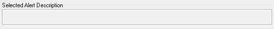).similar(0.96)): type(Key.F4, KeyModifier.CTRL) waitVanish(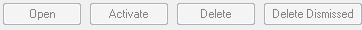) else: type(Key.DELETE, KeyModifier.CTRL) onAppear(, type('y')) waitVanish() type(Key.F4, KeyModifier.CTRL) waitVanish() #-------------F3 New slip fix-----------------# type('m', KeyModifier.CTRL) wait(Pattern().similar(0.93), 30) type('o', KeyModifier.CTRL) wait(Pattern(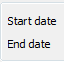).similar(0.92), 30) type(Key.F3) wait(Pattern(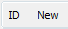).similar(0.91), 30) if exists(Pattern().similar(0.97)): click(Pattern().similar(0.97)) wait(.5) #click(Pattern("1383594107931.png").similar(0.96)) type(Key.F4, KeyModifier.CTRL) waitVanish(Pattern().similar(0.91)) type('w', KeyModifier.CTRL) #-------------Slip created from slip trigger is not in edit mode--------------# type('s', KeyModifier.ALT) wait(.5) type('l') wait(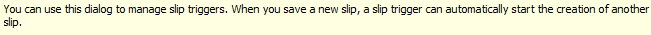, 30) type('n', KeyModifier.CTRL) wait(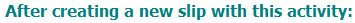, 30) type(Key.DOWN) type(Key.TAB) type(Key.DOWN) for x in range(1, 5): TABFunction.tab(x) type(Key.DOWN) wait(.5) type(Key.ENTER) waitVanish() type(Key.F4, KeyModifier.ALT) waitVanish() type('m', KeyModifier.CTRL) wait(Pattern().similar(0.93), 30) type('n', KeyModifier.CTRL) wait(Pattern().similar(0.91), 30) type("t") type(Key.TAB) type("s. robertson") type(Key.ENTER) type(Key.TAB) type("sikuli test task") type(Key.ENTER) type(Key.TAB) type("sikuli test client") type(Key.ENTER) type(Key.TAB) type("sikuli test reference") type(Key.ENTER) type('s', KeyModifier.CTRL) wait(Pattern(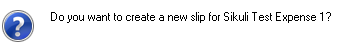).similar(0.92), 30) type('y') wait(Pattern(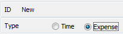).similar(0.92), 30) type(Key.F4, KeyModifier.CTRL) wait(, 30) type('n') waitVanish() type('w', KeyModifier.CTRL) wait(1) #--------------Slip value not incrementing with timer running------------------# type('m', KeyModifier.CTRL) wait(Pattern().similar(0.93), 30) type('n', KeyModifier.CTRL) wait(Pattern().similar(0.91), 30) keyDown(Key.SHIFT) for x in range(1, 7): TABFunction.tab(x) keyUp(Key.SHIFT) wait(.5) paste('500') type(Key.F5) wait(1.98) type(Key.F5) for x in range(1, 6): TABFunction.tab(x) type(Key.ENTER) wait(Pattern(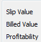).similar(0.89), 30) assert exists(Pattern(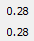).similar(0.93)) type(Key.ESC) waitVanish(Pattern().similar(0.89)) type(Key.F4, KeyModifier.CTRL) onAppear(, type('n')) waitVanish() type('w', KeyModifier.CTRL) #-------------Unable to turn off timer on duplciated slip----------------# type('m', KeyModifier.CTRL) wait(Pattern().similar(0.93), 30) type('n', KeyModifier.CTRL) wait(Pattern().similar(0.91), 30) type("t") type(Key.TAB) type("s. robertson") type(Key.ENTER) type(Key.TAB) type("sikuli test task") type(Key.ENTER) type(Key.TAB) type("sikuli test client") type(Key.ENTER) type(Key.TAB) type("sikuli test reference") type(Key.ENTER) type('s', KeyModifier.CTRL) if exists(): type('n') waitVanish() type('d', KeyModifier.CTRL + KeyModifier.SHIFT ) type(Key.F5) assert exists(Pattern(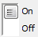).similar(0.94)) wait(1) type('s', KeyModifier.CTRL) onAppear(, type('n')) waitVanish() wait(1) type(Key.F5) wait(1) assert exists(Pattern(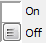).similar(0.94)) type(Key.F4, KeyModifier.CTRL) onAppear(, type('y')) waitVanish() type('w', KeyModifier.CTRL) #--------------Slip end date does not update when timer is enabled----------------# type('m', KeyModifier.CTRL) wait(Pattern().similar(0.93), 30) type('n', KeyModifier.CTRL) wait(Pattern().similar(0.91), 30) for x in range(1, 8): TABFunction.tab(x) paste('10/27/2013') for x in range(1, 5): TABFunction.tab(x) type(Key.SPACE) wait(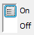, 30) assert not exists(Pattern(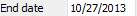).similar(0.98)) type(Key.F4, KeyModifier.CTRL) onAppear(, type('n')) waitVanish() type('w', KeyModifier.CTRL) #----------------Abbreviation does not expand properly------------------------# type('p', KeyModifier.ALT) type('a') wait(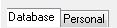, 30) type('n', KeyModifier.ALT) wait(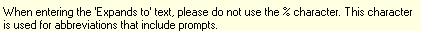, 30) paste('MTG') type(Key.TAB) paste('Meeting with Dev') keyDown(Key.SHIFT) type(Key.TAB) keyUp(Key.SHIFT) type(Key.ENTER) waitVanish() type(Key.ESC) waitVanish() type('m', KeyModifier.CTRL) wait(Pattern().similar(0.93), 30) type('n', KeyModifier.CTRL) wait(Pattern().similar(0.91), 30) for x in range(1, 7): TABFunction.tab(x) wait(.5) type('quick MTG brown fox') wait(.5) assert exists(Pattern(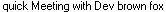).similar(0.94)) type(Key.F4, KeyModifier.CTRL) onAppear(, type('n')) waitVanish() #---------------Tabbing to slip start date triggers edit mode---------------------# type('m', KeyModifier.CTRL) wait(Pattern().similar(0.93), 30) type('n', KeyModifier.CTRL) wait(Pattern().similar(0.91), 30) for x in range(1, 8): TABFunction.tab(x) assert not exists(Pattern().similar(0.95)) type(Key.F4, KeyModifier.CTRL) waitVanish(Pattern().similar(0.91)) #----------------Slips default to no charge not working-----------------# type('n', KeyModifier.ALT) type('i') wait(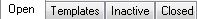, 30) type('n', KeyModifier.CTRL) wait(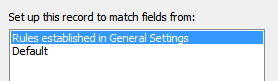, 30) paste(startTime.strftime('SR1 client %Y_%m_%d %H_%M_%S')) type(Key.ENTER) wait(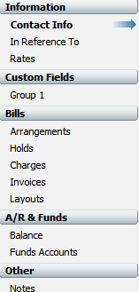, 30) keyDown(Key.SHIFT) for x in range(1, 7): TABFunction.tab(x) keyUp(Key.SHIFT) type(Key.SPACE) type('s', KeyModifier.CTRL) waitVanish(Pattern().similar(0.91)) type(Key.F4, KeyModifier.CTRL) waitVanish(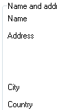) type('w', KeyModifier.CTRL) wait(.5) type('m', KeyModifier.CTRL) wait(Pattern().similar(0.93), 30) type('n', KeyModifier.CTRL) wait(Pattern().similar(0.91), 30) for x in range(1, 4): TABFunction.tab(x) type('SR1') wait(.5) type(Key.ENTER) wait(.5) assert exists(Pattern().similar(0.95)) type(Key.F4, KeyModifier.CTRL) onAppear(, type('n')) waitVanish() type('w', KeyModifier.CTRL) #------------------Flat rate slips load as Hourly----------------------# type('m', KeyModifier.CTRL) wait(Pattern().similar(0.93), 30) type('n', KeyModifier.CTRL) wait(Pattern().similar(0.91), 30) type("t") type(Key.TAB) type("s. robertson") type(Key.ENTER) type(Key.TAB) type("sikuli test task") type(Key.ENTER) type(Key.TAB) type("sikuli test client") type(Key.ENTER) type(Key.TAB) type("sikuli test reference") type(Key.ENTER) for x in range(1, 15): TABFunction.tab(x) wait(.5) type('f') type('s', KeyModifier.CTRL) if exists(): type('n') waitVanish() type(Key.PAGE_UP) assert not exists(Pattern(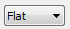).similar(0.95)) type(Key.PAGE_DOWN) assert exists(Pattern().similar(0.95)) #-----------------Slip End Date doesnt save when using + to increment---------------# for x in range(1, 8): TABFunction.tab(x) paste('10/29/2013') wait(.5) type(Key.TAB) wait(.5) paste('10/29/2013') wait(.5) type('s', KeyModifier.CTRL) wait(.5) type(Key.PAGE_UP) wait(.5) type(Key.PAGE_DOWN) for x in range(1, 9): TABFunction.tab(x) wait(.5) type('+') wait(.5) type('s', KeyModifier.CTRL) wait(.5) type(Key.PAGE_UP) type(Key.PAGE_DOWN) assert exists(Pattern(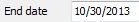).similar(0.96)) #----------------------back Space doesnt trigger Edit Mode----------------# for x in range(1, 7): TABFunction.tab(x) wait(.5) type(Key.BACKSPACE) assert exists(Pattern().similar(0.95)) type(Key.F4, KeyModifier.CTRL) if exists(): type('n') waitVanish(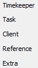) waitVanish() type('w', KeyModifier.CTRL) #SR1_2014_defect_fixes()